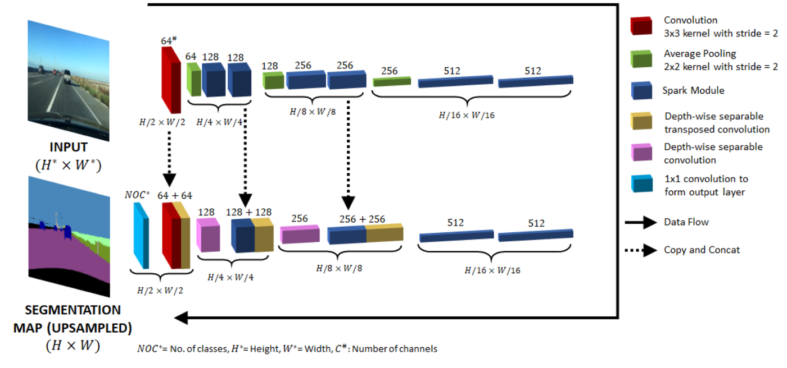
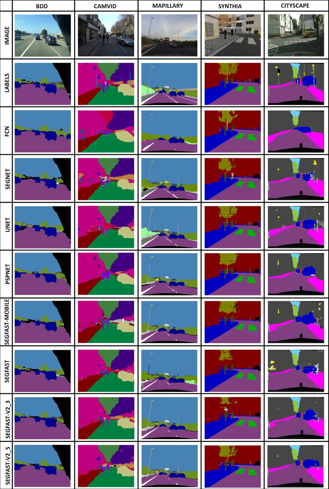

A street-scene segmenter with about fifty times fewer parameters than SegNet
Driver-assistance software needs to know what is in front of the car: road, pavement, pedestrian, vehicle. The best models for that job are big, and big models need expensive hardware. In this paper we built a much smaller one, SegFast-V2, and tested it against well-known networks on five street-scene datasets.
The problem
The task is called semantic segmentation. The computer looks at a photo and gives every single pixel a label, so the output is a colour-coded map of the scene. Networks that do this well, such as SegNet, UNet and PSPNet, hold tens of millions of numbers (the parameters, the adjustable settings a network learns during training). More parameters mean more memory and more arithmetic for every image.
Our concern was cheaper cars. Fully autonomous systems appear in expensive vehicles, while lower-priced ones get little or no AI. A model that fits on modest hardware could change that. Traffic in many countries is also very varied and crowded, which is where cheap driver assistance could help most.
The idea
SegFast-V2 extends SegFast, our earlier model. It follows the usual encoder-decoder shape: the first half squeezes the image down into compact features, and the second half grows them back into a full-size label map. Copies of early features are passed across to the second half so edges stay sharp. UNet works the same way.
The savings come from three tricks.
- Spark modules. SqueezeNet has a building block called a fire module, which first squeezes the channels and then expands them. Our spark module is a smaller version of it.
- Depth-wise separable convolutions. An ordinary filter looks at all channels at once. Here one small spatial filter works on each channel alone, and a cheap 1×1 filter then mixes the channels. The weight count drops from Kh × Kw × C to Kh × Kw + C, so the saving grows in deep layers with many channels. We also apply this trick to the upsampling layers of the decoder.
- Kernel factorization, new in V2. A filter is replaced by a chain of smaller ones. This cuts a 3×3 filter from 9 weights to 6 and a 5×5 filter from 25 to 12, so we could try bigger 5×5 filters without adding many parameters.

We also built SegFast-Mobile, which swaps our encoder for MobileNet, another model designed to be small. It shows how our encoder compares with that alternative. SegFast-Basic is an ablation: the same network with ordinary convolutions in place of the separable ones.
What we found
We trained on BDD, CamVid, Cityscapes, Synthia and Mapillary, with images resized to 360 × 480 and no data augmentation. We measured pixel accuracy and mean intersection over union (mean IoU, the overlap between predicted and true regions, averaged over classes). We also timed one image on a 16-thread Intel Xeon E5-2623 V4 CPU.
The SegFast family has about 600,000 parameters. SegFast has 603,288, SegFast-V2_3 has 599,380 and SegFast-V2_5 has 606,676. SegNet has 29,455,702, UNet 31,033,110, PSPNet 65,606,764 and FCN 134,507,010.
Accuracy lands in the middle of the pack. Averaged over the five datasets, pixel accuracy is 85.42% for SegFast-V2_3 and 85.56% for SegFast-V2_5. FCN reaches 81.05%, SegNet 86.42%, UNet 87.28% and PSPNet 88.68%. On mean IoU, SegFast-V2_5 scores 0.4002, close to SegNet at 0.4003 and below PSPNet at 0.4540. The ablation behaves as expected: swapping the separable convolutions for ordinary ones lowered accuracy, to 84.64%.

The paper recommends different variants for different needs. SegFast uses the least memory, 703 MB. SegFast-V2_3 is the fastest. SegFast-Mobile is the most accurate of our models, with 87.63% mean pixel accuracy and 4,637,526 parameters, still far fewer than the large networks.
What it does not do
SegFast-V2 does not beat the big networks on accuracy, and we say so in the paper. Kernel factorization cuts parameters but needs more activation maps, so SegFast-V2_3 uses 1101 MB of memory against 703 MB for SegFast. And 0.360 s per image on our CPU is still short of real time. We argue that even low-end GPUs should reach real-time speed, because the smallest model has a memory footprint of only about 700 MB. We did not test that on such a GPU.
We close the paper by suggesting that the same compression idea can be carried over to SegNet, UNet and PSPNet. The aim throughout was to put segmentation within reach of cheaper vehicles.
Acknowledgements
This work is sponsored by SERB (Government of India, order no. SB/S3/EECE/054/2016, dated 25/11/2016), and was carried out at the Centre for Microprocessor Application for Training Education and Research, CSE Department, Jadavpur University.
How to cite the paper
Swarnendu Ghosh, A Pal, S Jaiswal, KC Santosh, N Das, M Nasipuri (2019). SegFast-V2: Semantic image segmentation with less parameters in deep learning for autonomous driving. International Journal of Machine Learning and Cybernetics, Vol. 10, No. 11, pp. 3145–3154 · Springer.